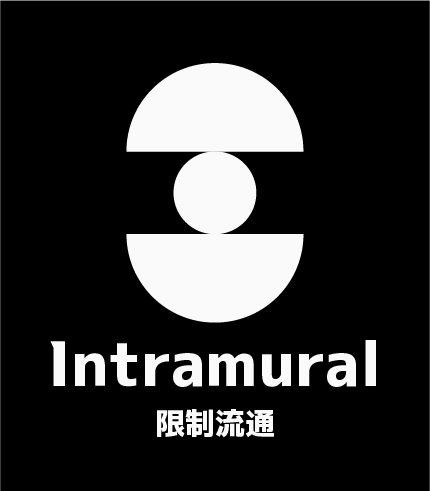
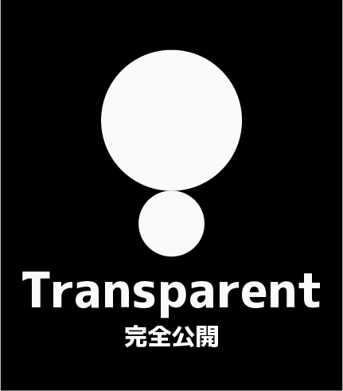

O - 觀測型
Observation
僅能觀測與紀錄，不允許接觸與干涉；任何干預皆可能導致災難性後果。
「我們啥都不能做，只能看著它鬧事。」
這種異常就像是你家的貓，會突然打翻水杯、半夜亂跑，但你不能碰牠、不能罵牠，連靠近都不行。只能架監視器盯著、天天寫報告，期待牠哪天自己放棄搞破壞。
「你不要動它、不要對話、不要靠近。只要你觀察得夠久，就知道它什麼時候會發飆……大概啦。」
Anomaly Classification
在《蠟燭與邪神》中，一個異常事件需經過「O.P.C.U」、「管理物質標籤」及「保密等級」的分類才可進行完整的歸檔。 前者告知一線人員如何處置，中者告訴研究人員這類異常屬於何種類型，後者標示相關資訊的閱覽權限。 若要查看已公開歸檔的案例，請前往 異常事件清單。
Classification Reference
O.P.C.U 是當前社會廣泛使用的異常事件分級法之一，代表面對各類型異常時的適切應對方式。 可拆成「觀測型（Observation）」、「規範型（Protocol）」、「協議型（Contractual）」及「無解型（Uncontainable）」四種適用分級。
將游標移至菱形上，點擊即可查看內容
Observation
僅能觀測與紀錄，不允許接觸與干涉；任何干預皆可能導致災難性後果。
「我們啥都不能做，只能看著它鬧事。」
這種異常就像是你家的貓，會突然打翻水杯、半夜亂跑，但你不能碰牠、不能罵牠，連靠近都不行。只能架監視器盯著、天天寫報告，期待牠哪天自己放棄搞破壞。
「你不要動它、不要對話、不要靠近。只要你觀察得夠久，就知道它什麼時候會發飆……大概啦。」
Protocol
可透過既定程序與防範機制進行有限使用或收容；需要嚴格執行SOP與設備維護。
「你不能控制它，但可以用一套規則讓它乖一點。」
像是在玩一個Bug超多的遊戲──你知道不能在某張地圖跳三下，不然會閃退。所以你立了個方法，只要照著流程走，它通常不會炸。
「進入區域要穿三層手套、不能說『風車』這個詞、移動只能逆時針……對，就是這麼莫名其妙，但它有用。」
Contractual
與異常建立協議或交換條件，維持合作關係；違約可能導致該異常脫控或懲罰。
「我們跟它簽了約，它幫我們做事，我們不能惹它。」
這種異常有點像雇傭兵或惡魔，你可以合作、交換東西，但它會記住，每一次。比你請的律師還認真。要是敢違約一次，就等著整個人被燒成灰吧。
「你可以請它幫忙，但你要給得起代價──而且不能反悔，它會記得每個字。」
Uncontainable
完全無法收容或控制，只能持續隔離觀察或定期調整世界應對結構；本質不可控、不可知。
「它就是個不能碰的麻煩，我們只能把它丟到最深的洞裡，然後祈禱它永遠別醒來。」
這種東西……你根本沒辦法對付。不能對話、不能封印、不能殺死，只能隔離它、偷看它、希望它別變更糟。
「基本上，那東西是公司高層也會作惡夢的存在。別靠近，也別問太多。」
某些特殊的異常事件會出現於人類或靈長類物種身上，被稱為「附著」。
大部分被附著的對象都會因此現象死亡，少數存活下來的對象視作該異常現象的產出物。
然而，極少數對象能夠與附著於身上的異常事件共存，甚至一定程度的控制、操弄該異常事件。
這類型的異常事件被稱為「受管束事件」。
「O.P.C.U條款的重點不在於如何收容，而是『怎麼撐下去』。我們不是在管理什麼，我們是在跟災難簽停戰協議，然後想辦法撐到下一次例行檢查為止。」
——莫里斯公司執行長 莉莉．莫里斯 筆
Clearance Classification
保密等級標示該異常事件相關資訊的閱覽權限與對外公開範圍。 可拆成「極機密（Clandestine）」、「受保護（Encrypted）」、「內部流通（Intramural）」、「有限度公開（Sanitized）」及「完全公開（Transparent）」五級。
僅在國家領導人、CTA 核心領導層等最高級別授權下始可檢閱。其外洩後果將造成無法挽回的災難性破壞，絕對禁止對外公開。未經授權之知情者將面臨最嚴厲之懲處，最高可逕行判處死刑。
受加密與權限管控之資訊。僅限多數政府高層與 CTA 內部核心人員進行完整檢閱。因全面公開的潛在風險極高，針對低權限人員仍需進行嚴格的資訊屏蔽（Redaction）或存取限制。

僅限於政府相關部門與 CTA 內部流通之資訊。若未經授權外洩，可能引發社會恐慌或對組織運作造成干擾。需進行標準的保密管控，嚴禁外部人士存取。
經脫敏處理之資訊，在特定條件下可有限度釋出。經評估確認「適度公開有助於該異常事件的管理或公眾安全」時，將授權開放給特定新聞媒體、醫療組織、教育機構或法律顧問等外部單位。

無任何閱覽限制之公開資訊。經確認全面公開不會引發負面效應，或該異常事件之威脅已完全解除（或已常態化）時適用此等級，任何人皆可自由查閱。
上述等級皆可因異常事件的變化而改變保密等級。